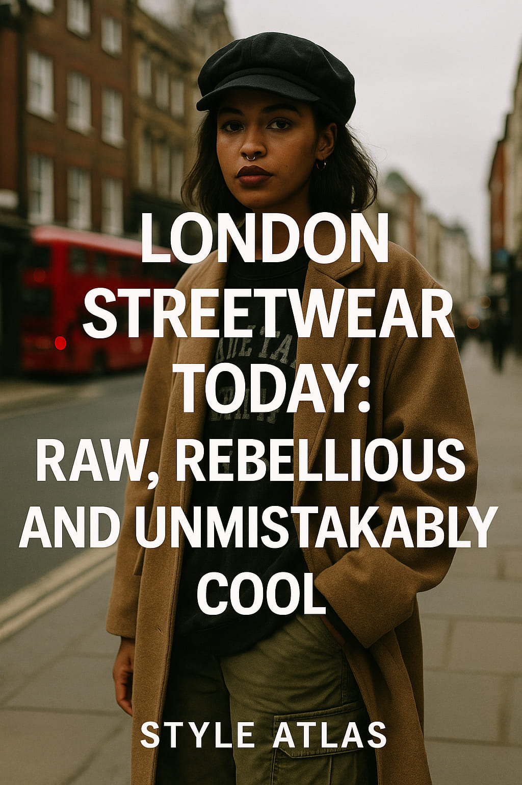
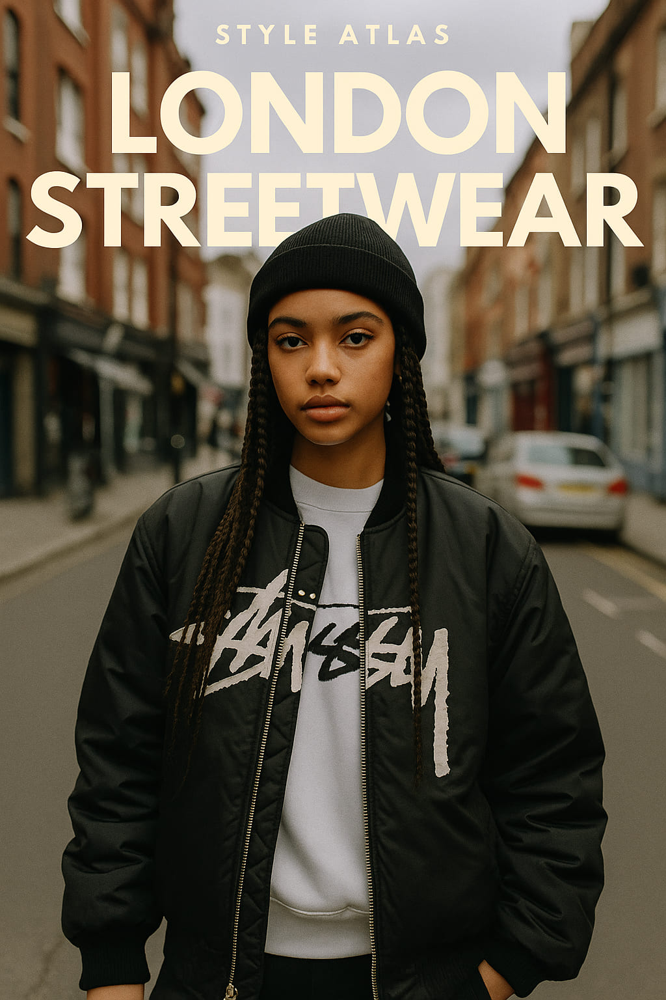
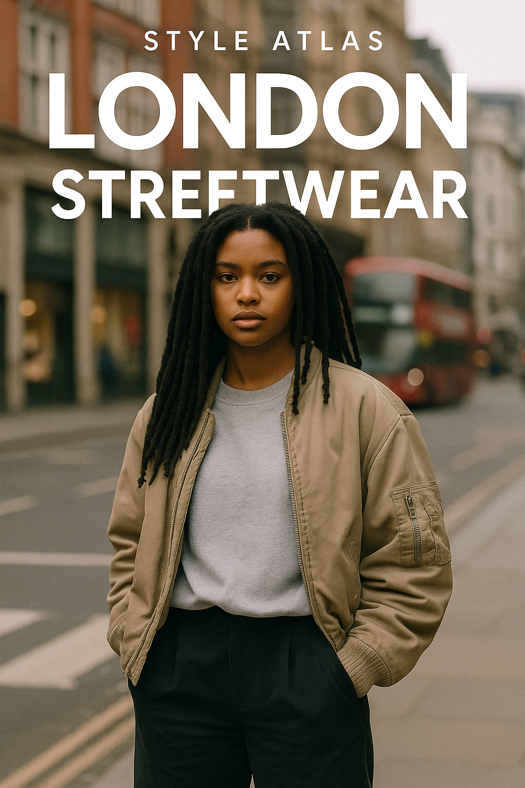

London Streetwear Today: Raw, Rebellious and Unmistakably Cool
London doesn’t follow trends—it creates them. While cities like Paris perfect polish and New York flaunts edge, London’s streetwear thrives on contradiction: gritty yet tailored, effortless yet meticulously styled. From Camden Market to Shoreditch High Street, the city is a runway of layered textures, subcultural nods, and fearless experimentation. This isn’t about minimalism—it’s about bold statements made with vintage cargos, beat-up trainers, and oversized coats that tell stories.
“Streetwear in London is about identity, not conformity. It’s punk, it’s grime, it’s genderless and genreless.”
The East London Effect
Walk through East London and you’ll instantly see why it's the global capital of subcultural fashion. The influence of punk, rave, and garage echoes in every detail: zippered trousers, checkerboard prints, and chains worn casually on the street. The vibe is never ‘trying hard’, but always intentional.
- Oversized bomber jackets layered over deconstructed hoodies
- Checkered trousers with visible stitching
- Vintage trainers—Nike Air Max, Reebok Classic, Puma Suede
East Londoners style their fits like protest signs. There’s a message in every mismatch. In Dalston or Hackney, thrifted pieces are worn with designer bags, not as a flex, but as an ironic balance of high and low. It's fashion with an accent—spoken in bold silhouettes.
Genderless Dressing: The Norm, Not the Trend
In London, clothing isn't confined by gender lines. Cropped tops on men? Tailored trousers on women with steel-toe boots? Absolutely. The youth scene particularly has rewritten fashion rules, creating a space where fluidity is the foundation. Neutral tones and monochromes reign, often clashed with bursts of neon or bold prints to reject uniformity.
“London’s Gen Z doesn’t care about the binary—they care about expression.” — Simulated Vogue UK source
Layers, Layers, and More Layers
London’s unpredictable weather isn’t a problem—it’s an opportunity. Streetwear here masters layering like no other city. Think trench coats over tracksuits, scarves wrapped in architectural twists, and mesh tops poking out from beneath cargo vests. The more unexpected the combo, the more it belongs in London.
The layering also mirrors identity: multicultural, multilingual, multidimensional. Whether it's Somali kids in Tottenham remixing American prep with African prints, or Polish skaters in South Bank fusing Y2K techwear with dad caps—it all converges into the visual poetry that is London streetwear.
Music and Streetwear: A London Love Story
Music is in the DNA of London fashion. Grime, drill, punk, dubstep—they all echo in the fits. Skepta and Little Simz aren’t just artists; they’re fashion icons redefining how culture gets worn. A tracksuit isn’t just functional—it’s a badge of heritage, of borough, of beat. And as the beats evolve, so do the looks.
You’ll spot sound system culture in camo jackets, Caribbean heritage in bandana patterns, and club culture in metallic pants that catch the streetlight at 3 a.m. Londoners dress to soundtrack their city.
District by District: Microcosms of Style
- Camden: Where punk never died. Expect leather, studs, tartan, and chains—often all at once.
- Notting Hill: Caribbean influences meet vintage glamour. Think printed shirts, platform shoes, and big sunglasses.
- Shoreditch: The curated grunge look—neutral tones, deconstructed fits, and indie thrift-store finds.
- Peckham: Afro-futurist meets nostalgic 90s. Bright palettes, mix-and-match patterns, and statement accessories.
Each postcode has its own moodboard. You could build an entire editorial just by walking from Brixton to Soho.
Footwear: Grounding the Aesthetic
London streetwear starts from the ground up. Classic silhouettes dominate: chunky sneakers, Dr. Martens, Chelsea boots, and skate shoes. But they’re rarely clean. Scuffed soles are stories. Mud is a memory. A well-worn pair says more than anything off the shelf.
Shoes here are less about matching and more about clashing—Nike with trench coats, Doc Martens with sheer dresses. Comfort is key, but aesthetic is king.
Photography, Mood and Aesthetic
Capturing London’s style is like chasing fog—beautiful, elusive, constantly shifting. Editorial photography here often opts for grainy textures, low lighting, and street angles. Street style isn’t polished; it’s poetic. The fashion blends with brutalist architecture, double-deckers, and graffiti-streaked alleys. It’s always about context, not contrast.
That’s why London continues to influence global fashion weeks and underground movements alike. What you see on the street here today, you’ll see on runways in Tokyo, Seoul, and Copenhagen next season.
Where to Spot It
- Brick Lane on a Sunday morning
- Southbank Skate Park any afternoon
- Fashion East shows during London Fashion Week
- Dalston pubs after midnight
These aren’t just places—they’re stages. Londoners know that walking out the door is an act of performance. It’s why fashion lives here, breathes here, and evolves here faster than anywhere else.
Conclusion: Own the Chaos
To draw style inspiration from London is to embrace contradiction. Be polished but undone. Be loud but silent. Be curated but spontaneous. There are no rules—only rhythm. And that rhythm beats loudest on London’s streets.
“If you look comfortable, you’re not in London. Here, it’s about looking like you just escaped an underground rave or an art school exhibit.”
So layer up. Clash prints. Rewear those old trainers. Because London isn’t just a place—it’s a style language. And once you learn to speak it, you’ll never want to dress another way again.
Words by Style Atlas